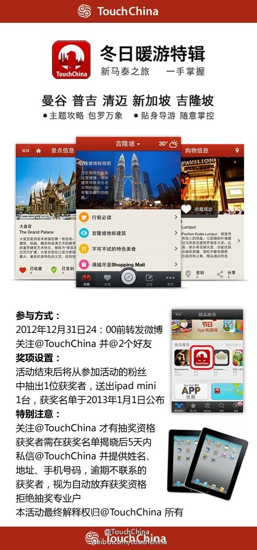

辟谣//@用心阁:帮转//@心内dogloszw: 辟谣的转发量明显不如造谣的，所以我必须要转发这条辟谣微博。今天是我们医生，明天就可能轮到你们中的某个人被造谣了，谁都逃避不了。---:抱歉，作者已设置仅展示半年内微博，此微博已不可见。
八个城市的OpenStack中国行，积累了很多经验。可能对很有经验的活动组织者来说，这些囧都算不上什么事儿，可还有没办过社区活动的需要有经验的人分享，@Adela可爱多 这篇太及时了。 『OpenStack中国行囧事小记（周三午餐会）』 网页链接
这几个人要通知到 @CMDN炫姐姐 @CSDN李涛 @梁颍_行云流水@多趣旅行:当末日不死，当一转眼就发现TouchChina#冬日暖游#特辑被App Store新品推荐，抑不住的狂喜想要分享～现在只要关注@TouchChina 转发微博并@ 2位好友，就有机会获得我们送出的iPad mini！既然世界末日不来，你就不能再有借口不去旅行了！戳链接，出发吧！网页链接 